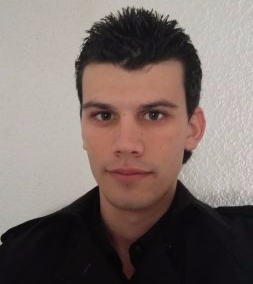
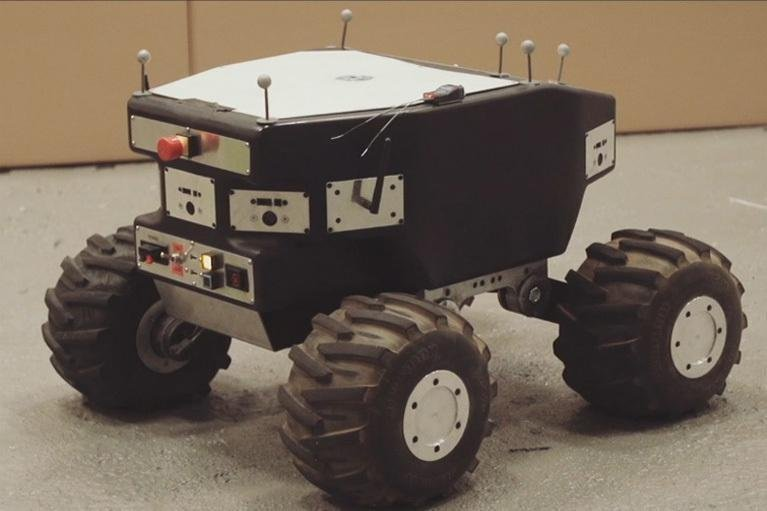
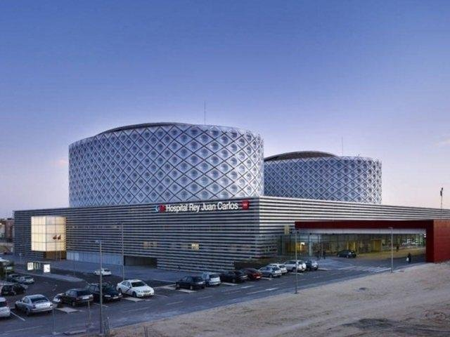

Curriculum Vitae

Rubén Morante González
ruben.morante.gonzalez@outlook.com
Summary
N/A
Experience
Profesor particular de programación
enero de 2017 - Present
Java, Python, Ruby, Haskell, C++, Pascal
Programador de aplicaciones Web
Cuerpo Nacional de Policia
septiembre de 2016 - noviembre de 2016 (3 meses)
Programación de aplicaciones web internas
Java, Javascript, HTML, CSS
Programador en el área On Board Systems
equipo de robótica terrestre at IXION Industry & Aerospace, S.L
marzo de 2016 - agosto de 2016 (6 meses)
Desarrollo software
Validación y verificación de software
Integración de sistemas
Java, C, C++, Wiki, Jenkins

Técnico informático Universidad Rey Juan Carlos
abril de 2014 - julio de 2015 (1 año 4 meses)
Soporte informático a los ordenadores de la Universidad Rey Juan Carlos
Técnico informático at Universidad Rey Juan Carlos
2015 - 2015 (1 año)
Soporte informático durante la realización de los exámenes de medicina.

Representante en AULA 2015 at Universidad Rey Juan Carlos
2015 - 2015 (1 año)
Feria de AULA en IFEMA
En AULA 2015 nos podremos encontrar con los siguientes sectores representados:
- Estudios Universitarios.
- Estudios en el extranjero.
- Estudios de Post-grado y Master.
- Otros Estudios Superiores.
- Estudios de Idiomas.
- Estudios de Formación Profesional y otros estudios profesionales.
- Primer Empleo.
- Elearning.
- Ong’s.
- Organismos Oficiales.
- Servicios al estudiante.
- Prensa especializada.
- Actividades Deportivas.
Representante en AULA 2012 at Universidad Rey Juan Carlos
2012 - 2012 (1 año)
Feria de AULA en IFEMA
Salón AULA 2012 Madrid, la Feria Internacional del Estudiante y de la Oferta Educativa 2012, celebrará este año su vigésima edición en Madrid, en las instalaciones del recinto ferial de IFEMA, entre los próximos días 22 al 26 de febrero de 2012, mostrándonos las últimas novedades del sector.
En AULA 2012 nos podremos encontrar con los siguientes sectores representados:
- Estudios Universitarios.
- Estudios en el extranjero.
- Estudios de Post-grado y Master.
- Otros Estudios Superiores.
- Estudios de Idiomas.
- Estudios de Formación Profesional y otros estudios profesionales.
- Primer Empleo.
- Elearning.
- Ong’s.
- Organismos Oficiales.
- Servicios al estudiante.
- Prensa especializada.
- Actividades Deportivas.
Education
Master Universitario en Ingeniería Informática
Ingeniería informática
2017 - 2018
Grado en Ingeniería de Computadores
Ingeniería informática
2010 - 2017
Activities and Societies:
- Equipo de fútbol interuniversitario
- Miembro de la asociación de estudiantes Unión de Alumnos del Campus de Móstoles (UACM).
- Colaborador, Technology Fest: 2012-2014.
- Organizador, Technology Fest: 2017.
- Organizador, festividad de San Silicio: 2012-2015.
- Colaborador, FesTICval: 2013-2015.
- 4ESO-Empresa: 2017.
- Visitas guiadas a centros escolares: 2011-2014.
- Realización de torneos de cartas y torneos de videojuegos en diversas ocasiones.
Grado en Ingeniería Informática
Ingeniería informática
2010 - 2017
Activities and Societies: Ver actividades y grupos de "Ingeniería de Computadores"
Bachillerato Tecnologico
I.E.S. Gran Capitán
Bachillerato
2007 - 2010
Monitor de tiempo libre y juegos
SHEMA Escuela de Tiempo Libre
Monitor de tiempo libre
2006 - 2008
Colegio Liceo Ibérico
Educación Secundaria Obligatoria
2003 - 2007
Educación Primaria obligatoria
Colegio Liceo Ibérico
2000 - 2003
MOOC Ciberseguridad
URJC online